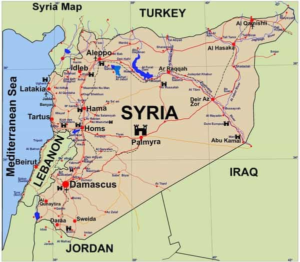
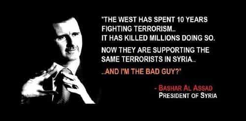
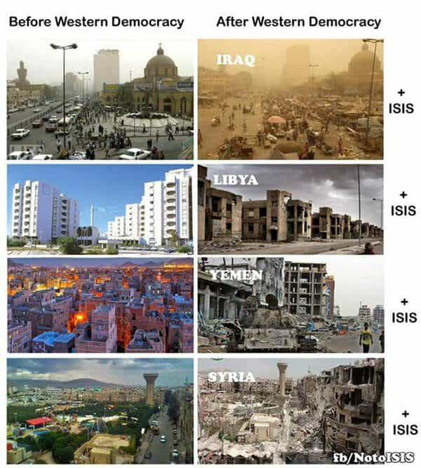
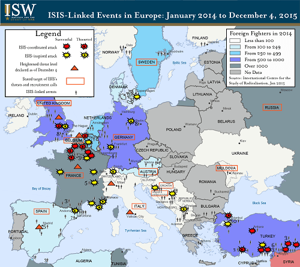

is an aspiring philosopher king, living the dream, travelling the world, hoarding FRNs and ignoring Americunts. He is a European at heart, lover of Latinas, and currently residing in the USA.


Hours after the April 4, 2017 incident at Khan Sheikhoun in Syria, western media began publishing stories that the Syrian military had used chemical weapons in an attack on civilians. The rapid conclusion by (((foreign))) media that immediately determined what weapons were used, where, and why, should be an immediate red flag that truth has been sacrificed for politics. We shall examine 6 questions about Syria, after a brief introduction.

Syria was established in 1946, and was governed by a group of well connected elites. A middle class political movement of Ba’athism grew, until it seized power in both Iraq and Syria in a military coup in 1963.
A number of coups occurred over the 1960s, and in 1970, Hafez al-Assad, father of the current president, became president of Syria. He eased government repression, purged the security services, transferred some military power to civilian police, ended civil asset forfeiture, eased international trade and travel, encouraged private sector growth, modernized agriculture and industry, constructed one of the world’s largest dams, rejected EU demands to allow private or international banks and put down Islamic uprisings in the 1970s.

He also increased the power of the presidency, removing checks and balances, and the presidency became a powerful office with a cult of personality. Political reforms stalled, and the economy faltered, partly due to military involvement in wars with Israel, and the Lebanese civil war in 1976, supporting Christians. He died in 2000, leaving the country to his son.
When Assad and his wife visit Paris (Christmas, 2010)
Bashar al-Assad is the legally elected president of Syria, holding office since July, 2000. He was born in Damascus, graduated medical school, worked as a doctor in the Syrian Army, and attended postgraduate studies at the Western Eye Hospital in London. He was elected to three seven-year terms as president in 2000, 2007, and 2014. In the most recent election, which occurred during civil war, he received 88.7% of the votes, and under terms of the 2012 constitution, is in his final term as president.
When ISIS visits Paris (November 2015)
With that in mind, here are 6 questions the controlled media refuse to discuss.
Syrians are ethnically Levantine Arabs and Palestinians, and are majority Muslim. Assad governs as a secular ruler, protecting the Christian minority population, which include Assyrians and native Aramaic speakers that go back to the time of Christ. The 2.5 million Christians in Syria are a major target for torture, kidnapping, and execution by Islamic armed forces, and have seen disproportional death and extermination.
While Syria’s government is one of an Arab strongman, with all the unpleasant “dear leader” monikers and lack of checks and balances, it is moving in the direction of reform, especially with the new constitution of 2012, and is a relatively stable and functioning government in the region.
Intelligent, rational, European educated
Is the Syrian government ideal by western standards? No. Is it a successful government in the region, moving in a positive direction? Maybe. Are there any reasonable alternatives to the current Syrian government? Hell no.
If we are ranking governments by their legitimacy and efficacy, there are dozens of governments that are more valid candidates for “regime change” than Syria. I would name them, but it would only encourage neocons to add more to their running list. The last NATO survey shows 70% of Syrians support their government. Until the US elects a leader with over 70% of the vote, it must refrain from hypocritical regime change abroad.
Red = Assad, Green = Al Queda/Al-Nusra/FSA, Grey = ISIS
1. The initial rebels were the Free Syrian Army, Al-Nusra jihadists, and Al-Qaeda. While one can argue about the barbarism of using chemical weapons, there have been gross atrocities committed by these groups, including a rebel commander cutting out and eating a human heart in Syria, and their track record in Iraq speaks for itself. This is the group receiving US weapons and aid.
2, Soon the Islamic State spread to Syria, after taking vast areas to the east in Iraq. This group now controls the largest parts of the nation. Thanks W!
3. Finally, the Kurds, represented in yellow, lie along the northern border of Syria and Iraq. Kurds are probably the most moderate of the rebels, but they are not interested in running Syria; just self governance for their regions in northern Iraq and Syria.
The current Syrian Civil War erupted when the Arab Spring, a pro-democracy movement throughout the region, was repressed by Syrian military forces. The merits of democracy are debatable; certainly they are not worth the death and destruction that is its byproduct.
While one could argue that democracy worked in America for a while, the American experiment cost around 50,000 casualties, and less than 7,000 deaths from battle in the Revolutionary War. The Syrian Civil War has seen at least 450,000 deaths in Syria, as well as thousands of murdered or raped European civilians, all in the hope that Syria can elect some Wahhabi theocrats to run its government.

Let’s consider what a democratic Syria would look like. Muslims, who are in the majority, and are currently massacring Christians in Syria, would either exterminate or expel Christians under a majority elected Muslim theocracy. Progress and secularism would end.
Al Qaeda and ISIS military leaders would be given political and economic power. Does anyone believe they would obey international rule of law or restrictions against chemical or nuclear weaponry? For how many more years does the west expect to have a monopoly on nuclear technology? Do we want that in the hands of secular, western educated doctors, or Islamic radicals?
Arab Spring revolutions were successful in Iraq, Libya, and Egypt. Will anyone other than neocon shills like (((Paul Wolfowitz))) dare defend these as shining examples for the Mideast to emulate?
Mainstream media absolutely refuses to answer this question. I heard a piece on NPR this week that had not a single fact–merely comparisons to JFK assassination, 9-11 inside job, and alien abduction theories, implying that anyone who doesn’t fully believe that Assad gassed his own civilians, is a crazy person. The entire story was just shaming people who questioned the narrative, without a single fact backing up said narrative. Ironically, it is western media, who aren’t even present in Khan Sheikhoun, and are only repeating rumor and innuendo, who are acting like nutters.
Syria had chemical weapons stockpiles in the past. According to secretary of state John Kerry, under international supervision, 100% of Syria’s chemical weapons were removed in 2013. US intelligence has denied any intelligence failure in Syria. There are 3 possibilities: (1)The US and international community lied when they said all chemical weapons were destroyed, (2) US intelligence is lying now and DID fail to locate additional chemical weapons or (3) new weapons were created or transported to Syria. The obvious implication of #3 is by whom?
But this time it wasn’t them, we promise!
While there is no evidence of Assad’s use of chemical weapons, the NYTimes reported that ISIS used chemical weapons at least 52 times in Syria and Iraq, two cylinders of sarin were taken from rebels in 2014, who captured a chemical warehouse in 2013, and Islamic rebels admitted to having used chemical weapons in Aleppo in 2016. How exactly did western governments and media rule out these numerous rebel groups who have been caught possessing and using sarin gas so rapidly, when they are not even present? Maybe it was remote viewing.
Videos of dead bodies are disturbing, but militia groups have faked them before, and some are already questioning if videos from this attack were staged.
On April 1, days before the attack, Dr. Shajul Islam received a shipment of gas masks. Why would these be necessary for even military soldiers, much less civilians? The implication is that rebels knew of a gas attack days before it occurred.
But we didn’t do it! Trust us! It was just a “thought experiment”
Finally, the US reportedly had a plan in 2013 to fake a chemical weapons attack in coordination with UK war contractor Britam Defence and blame it on Syria. It doesn’t take Jack McCoy to put Syria at the bottom of the list of suspects.

The UN has estimated over 4.8 million Syrians have left Syria due to the civil war. Most Christians have left, as their death is certain if more territory falls to rebel groups. Every major random attack on European civilians, from the Cologne New Year rapes, to the Bataclan concert hall to the Christmas Paris market attacks to German machete attacks were committed either by Syrian rebels, or violent criminals blending in with the other millions who fled to Europe.
Every day that the Syrian Civil War continues, European lives are at risk. And every day Assad and Russia push back ISIS and Al-Qaeda forces, is a step towards safety and security for Europeans.
Almost half a million have died in Syria’s civil war, with millions more displaced. Most of these people will never see their homes or neighborhoods again. But let’s assume one day, the government, despite taking back Aleppo, and making big gains with Russian help, decides to use chemical warfare, not against a concentration of enemy troops, but in a civilian area far from the front line, killing children who are not even its enemy.
Are the hundreds of thousands of dead, including Christians, including European civilians, and including countless innocent Syrian children, perfectly disposable, but 70 to 80 deaths in a single incident require western intervention? The western government’s answers of aiding ISIS and Al-Qaeda to victory will spell the deaths of countless more. Even if all these claims are true, they call for a debate and discussion of the situation, not for illegal war.
Bonus Question: Why is the Israel-Syria border controlled by Al-Queda/Al-Nusra? And they haven’t bothered attacking westward?
It’s very possible that we are being told lies AND that Syria acted poorly. For example, if Syrian jets bombed a chemical weapons store in proximity to civilians which caused their death, that would be a pox on both their houses. No one is defending an evil regime simply because they ask questions.
In life, things rarely are clearly black or white. Anyone who is passionate about war because they KNOW Assad is a bad guy, but has never lived in Syria, and came to this conclusion by watching some western media clip, is not to be trusted. Anyone who insists Russia should just nuke the whole occupied territories, is likewise wrong. Be are open to the truth, wherever it lies. But demand it.
Demand answers. Reject media parroting and name calling. And remember, with every further lie, the mainstream media becomes more irrelevant.
Read More: 10 Facts Regarding the US Strike On Syria